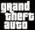

De: La Frikipedia, la enciclopedia extremadamente seria.
De: La Frikipedia, la enciclopedia extremadamente seria. De: La Frikipedia, la enciclopedia extremadamente seria.
| De la serie personajos de videojuegos: | |||
| Big Smoke | |||
| |||
| Creador | La estrella rockera del norte. | ||
| Distribuidor | Ganzter S.A. | ||
| Ataque favorito | Horda de pandilleros | ||
| Juegos en los que aparece | GTA San Andreas. | ||
| Punto débil | CJ. | ||
| Nacimiento | Fusión de un negro y una gorda. | ||
| Muerte | A manos de CJ. | ||
| Heroicidades | Digamos que es un villano. | ||
«Solo tenías que seguir el maldito tren CJ»
~ Big Smoke jodiéndonos la vida
«Io soy el Grando Smokio»
~ Big Smoke después de una clase de español con CM Punk
«Que sean dos 9, un 9 grande, un 6 con extra de salsa, un 7, dos 45, uno con queso y soda grande»
~ Big Smoke en un restaurante cualquiera
«Me want chicken!!!»
~ Big Smoke razonando de manera tranquila
Kalani Kaleiʻaimoku o Kaiwikapu o Laʻamea i Kauikawekiu Ahilapalapa Kealiʻi Kauinamoku o Kahekili Kalaninui i Mamao ʻIolani i Ka Liholiho, también conocido como Big Smoke es un antagonista drogata del videouego GTA San Andreas, donde nos da ciertas misiones, a cambio de comida chatarra debido a su adicción a la comida, y traicionará a CJ por no comprarle pollo frito. Al principio parece solo un gilipollas más, pero al avanzar la trama, nos damos cuenta de que este gordo busca crear drogas con sabor a pollo frito.

|
SPOILERS. |

Smoke nació cuando un negro comió tanto, que su estómago explotó, esa grasa desparramada se acumuló en un solo punto sobre una planta de coca, lo que produjo que se replicara, como un clon del primer negro, dándole vida a Big Smoke.
Big Smoke, como buen negrata gringo se unió a una pandilla, porque creía que le iba a dar una ración de por vida, de pollo frito, pero al ver que no fue así, decidió robarlo en los restaurantes, e iba a buffets todo lo que pueda comer por $1 y se comía todo lo que habia, para volverse OG (original Gangster, lo que viene a ser, uno de los líderes) le tocó someterse junto con Ryder, a pruebas de sadomasoquismo, para ganarse la confianza y aprobación de Sweet y poder satisfacerle las aberraciones sexuales, aunque con la condición de que Sweet le diera una ración diaria de pollo frito.
Smoke, con ganas de tener otra experiencia con el pollo frito, buscó la forma de combinar el sabor del pollo con el crack, algo que molestó a Sweet, el cual le quitó las raciones de pollo frito, reemplazándola por tacos, cosa que molestó a Smoke el cual buscó venganza por este hecho, uniéndose a los Ballas, aunque siguiendo siendo parte de los Families, junto con Ryder (El cual quería probar más tipos de droga), para matar a Sweet, pero por error, terminó matando a la mamá de Sweet, en el conocido incidente del Sabre Verde.
A causa del incidente de la muerte de la mamá de Sweet y de CJ, el Calvo Jodedor llegó a Los Santos, proveniente de Liberty City para saistir al funeral de su madre, cosa que Smoke aprovechó para darle favores (como robar el pollo frito del buffet de un tren; de ahí su frase célebre) para distraerlo y así poder seguir con sus experimentos de perfección del Crack con aroma a pollo frito. Ya cuando se dio cuenta que no valía la pena distraerlo, decidió prepararles una trampa para matar a CJ y a Sweet, pero su trampa fracasó, y se fue a poner en marcha su plan, creando su propia franquicia de pollo.
Después que CJ voló la el cluckin'bell de San Fierro, Smoke puso en marcha su plan de crear la droga con sabor a pollo frito, aliándose con todas las pandillas drogatas del estado de San Andreas, para que le dieras protección a cambio de putas mujerzuelas y droga.
Cuando CJ y Sweet se reencontraron, decidieron, hacer alianzas con los extraterrestres, para que estos les dieran información del paradero de Smoke y así poder matarlo, los extraterrestres les dieron la información, a cambio de 40000 cadáveres de negros y mexicanos, a los cuales CJ mató en las guerras de bandas. Cuando CJ llegó al palacio de Smoke, este se puso un disfraz de pollo frito antibalas, para iniciar la batalla final contra su viejo amigo, la batalla llegó a su fin cuando CJ, pulsó el botón que liberaba a los perros, los cuales devoraron a Smoke, dándole fin a la vida de este gordo cabrón.
|  Grand Theft Auto | |
|---|---|
|
Videojuegos
Protagonistas
Personajes
Ciudades
|
Autor(es):